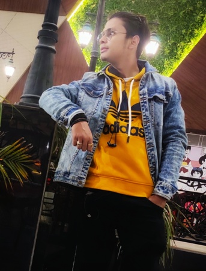

|  | AMAR DUTT UPADHYAY(Persued B.C.A. from RSMT)for strengthening our societies and having a positive eeffect on the world. Only together we can build a better future, therefore my communication and team working skills |
| ✉ amarduttupadhyay@gmail.com | 📱 +917272096364 | 📫 VARANASI, UTTAR PRADESH | 📆 10-SEPTRMBER-1999 |
WORK EXPERIENCEINTERN COMPUTER OPERATORVISHAL MEGA MART 07/2018-PRESENT ACHIEVEMENT/TASKS
EDUCATION
|
SKILLS
TECHNICAL (IT) SKILLSGraphicsHand Drafting, Sketching, Autodesk AutoCAD, Arggis, Adobe Creative Hands On Good strength in languages like C++, JAVA, PYTHON Platform Windows & OSX Operating Systems Microsoft Office ,Google Drive Other Basic web development, model building , darkroom techniques, professional level digital +film photography. |